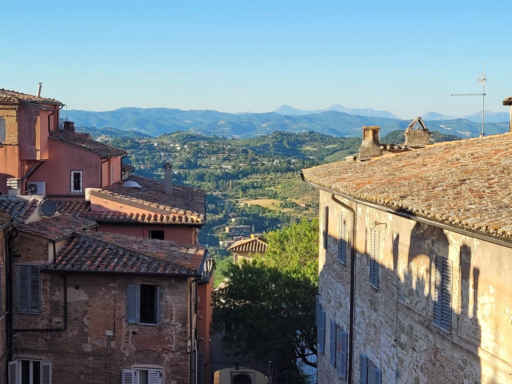
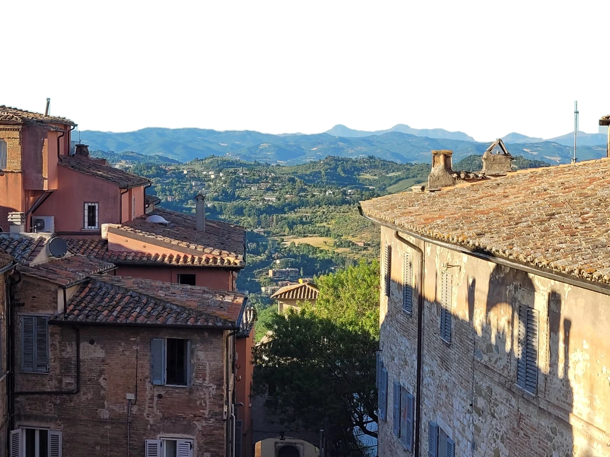
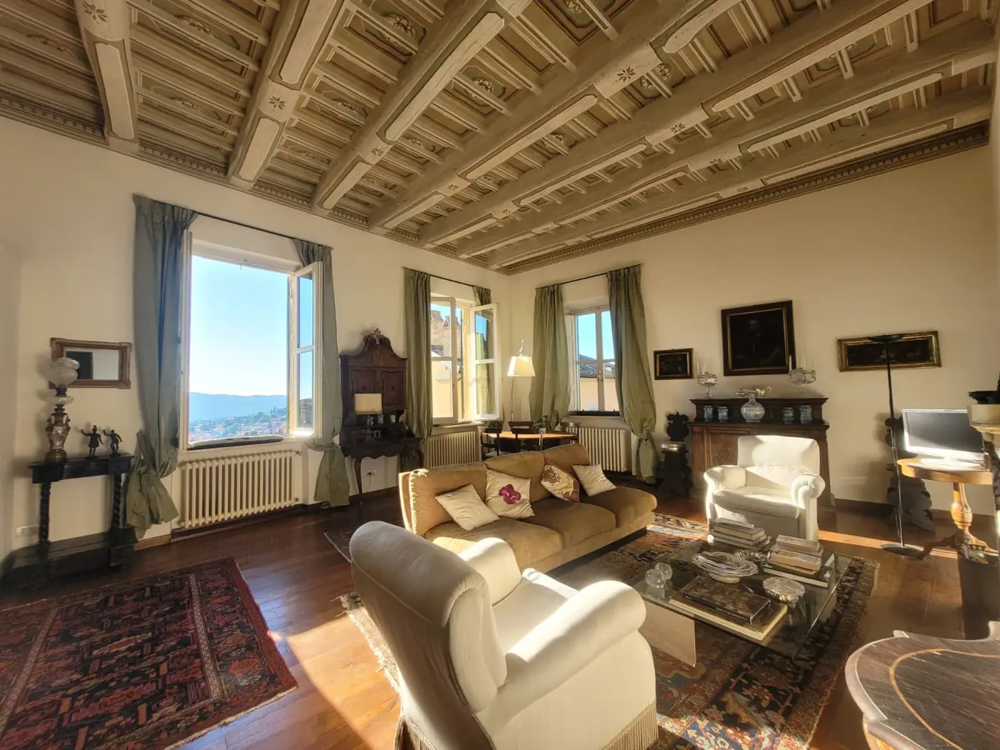
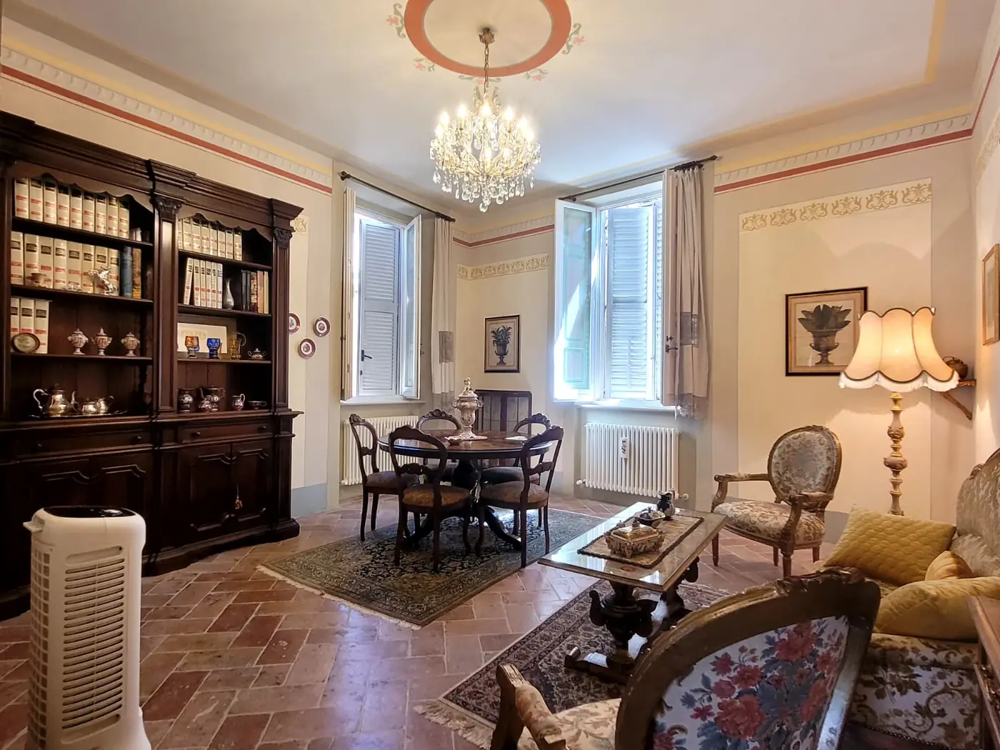
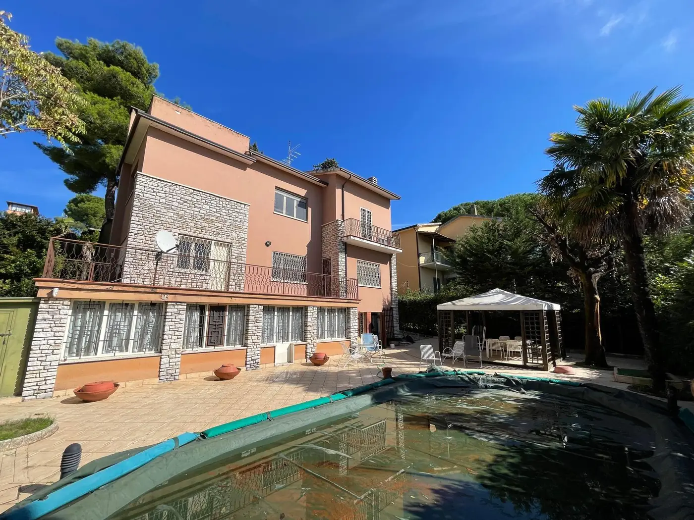
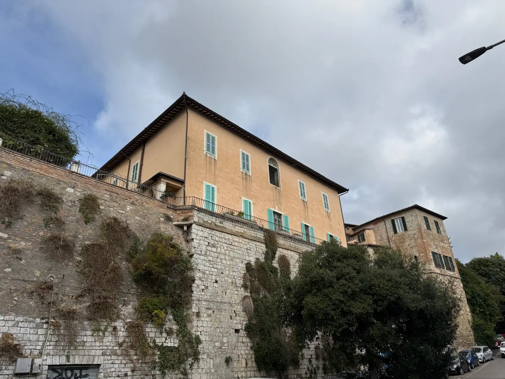
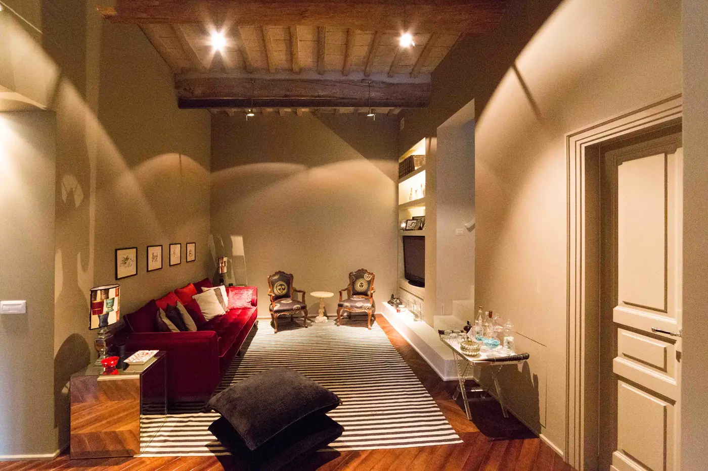
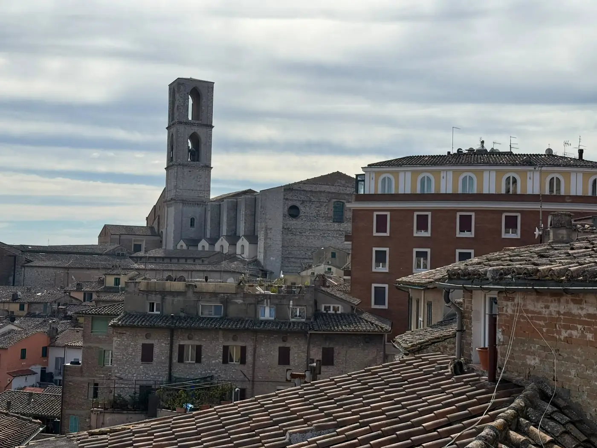

In vendita · centro storico
Piazza Italia, la sala affrescata
160 m² · 2 camere · 2 bagniIn agenzia
Come potrebbero essere il profilo Instagram e la scheda Google, con il marchio nuovo.
Il profilo proposto con i primi nove post. Tocca un post per vederlo grande.


Valutazione in agenzia in Corso Cavour 23, o scrivici su WhatsApp al 349 789 8778.




Appartamenti, uffici e locali a Perugia. Chiedi in agenzia cosa c'è libero.
La scheda Google sistemata: nome, indirizzo, orari, descrizione, un aggiornamento, servizi e foto.
Agenzia immobiliare nel centro storico di Perugia, in Corso Cavour 23. Vendita e affitto di appartamenti, ville, casali, locali commerciali, hotel, aziende agricole e terreni a Perugia e in tutta l'Umbria, con consulenza tecnico-legale e bancaria.

